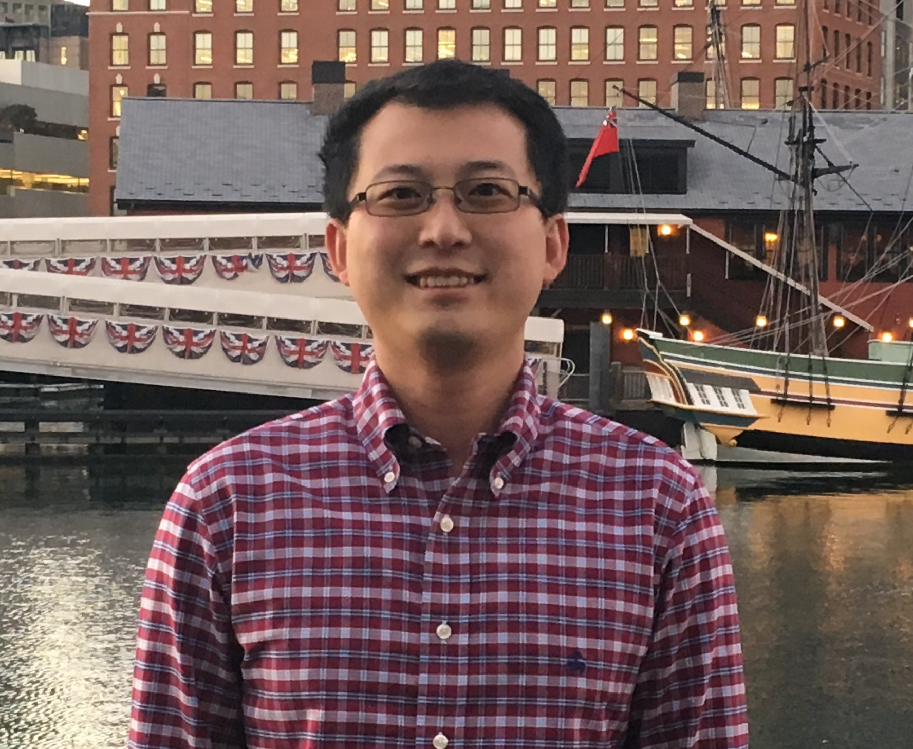

Introduction
Hi, my name is Tianyi. I graduated from University of Washington with an electrical engineering degree. Worked at Intel for a couple of years and was a part of the design team for it's third and fourth generation CPU. Currently working at a local hospital near the downtown area of Seattle as a certified nurse assistant. My only goal for this year is to finish my training with Code Fellows and find a job as a software engineer.
